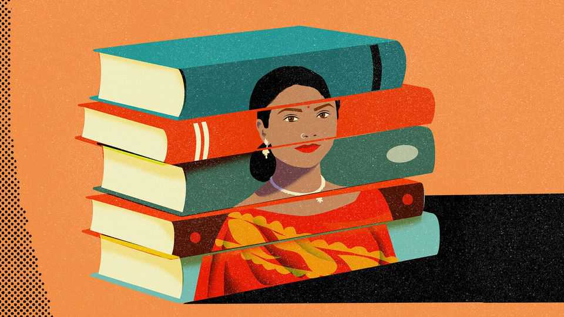

What Indians are reading, and what that reveals about the self
English-language books offer a glimpse of India’s hopes and dreams
July 9th 2026

India IS A rare country where hawkers still peddle pirated books at traffic lights. Congestion is often terrible, it is true, but it is not novel-length bad. The black-market trade says several things about the place: that there are not enough bookshops; that Indians are keen readers; and that copyright enforcement is somewhat lax. No matter. For many authors—if not their publishers—seeing knock-off versions of their books from car windows is the ultimate sign of success.
The observant commuter will spot something else. In a country where only a small minority has any facility with the language, and an infinitesimally tiny one speaks it natively, all the books sold at red lights are in English. So are most of those at roadside second-hand-book dealers, in bookshops and in the top 100 on Amazon India. English-language books make up about half of (non-educational) official sales. For a country as linguistically and culturally kaleidoscopic as India, that makes English books a rare example of common ground. What Indians read offers a glimpse of their hopes and dreams.
Bookshop displays and bestseller lists reveal the chief concern of the Indian reader to be self-improvement. English is itself the biggest giveaway: it is the language of aspiration, not of pleasure. The split within English is illuminating, too. Half of all books sold are non-fiction, with fiction and children’s books roughly equal. That is in contrast to other big English-language markets, where fiction has a clear lead.
That is why “Atomic Habits” and “The Psychology of Money” are reliable bestsellers. “Word Power Made Easy”, which combines linguistic aspiration with the more general kind, is a perennial favourite. The desire for personal growth is not new. “How to Win Friends and Influence People” has been a regular on Indian bookshelves for decades. But it has recently been Indianised. “Do Epic Shit” by Ankur Warikoo, an entrepreneur and content creator (what else?), has sold over 300,000 copies since it came out in 2021. Its secret is to locate its epigrams in modern Indian society. The shops are full of similar books offering advice on life, work, health and relationships written by everyone from celebrities to doctors.
Books reveal, too, that Indians are on a journey of self-discovery. Histories of India, often written by foreigners, have always sold well. But now Indians are not just writing their own stories, as Manu Pillai does in his mammoth “Gods, Guns and Missionaries”. They are also interrogating who actually tells these stories, as Sowmiya Ashok does in “The Dig”, a book about “the politics of the past”. Contemporary histories are thickening the genre. Publishers rush out quick-response editions about still-fresh events; a book about last year’s war with Pakistan was out within months of the fighting. Even memoirs by retired bureaucrats and politicians find a market (though mostly among their own friends and contacts).
Books related to religion, mythology and spirituality are a growing force. One of last year’s bestsellers was a small, inexpensive edition of the “Hanuman Chalisa”, a five-century-old Hindu devotional poem. Gaur Gopal Das, who calls himself an “urban online monk”, writes blockbuster hits that combine self-help with spirituality. India’s foreign minister wrote one about geopolitics based on the lessons of the Ramayana. Other books tell CEOs what they can learn from the Mahabharata.
Back at the traffic lights, an idling driver might notice that many bored commuters are whiling away their time on their phones. Indeed. Social media and books share a symbiotic relationship. YouTube videos from literary festivals, Instagram poses from bookshops, photos of annotated pages of Dostoevsky—books feed the feed. And vice versa. Mr Warikoo’s guide was essentially a collection of his social-media posts. Last year’s biggest fiction hit was “Too Good to Be True”, a romance novel whose author, Prajakta Koli, is a YouTuber with millions of subscribers. Books reveal the Indian reader—both creator and consumer—to be versed in the art of self-promotion.
Yet social media does not transform the act of reading. It is at heart a solo endeavour. In India it is also a socially acceptable way of cultivating an individual identity in what remains a deeply collectivist society. Whether undertaken in pursuit of self-improvement, self-discovery or self-promotion, its appeal points to a deeper aspiration of modern Indians: the desire for self-expression. ■
Subscribers to The Economist can sign up to our Opinion newsletter, which brings together the best of our leaders, columns, guest essays and reader correspondence.